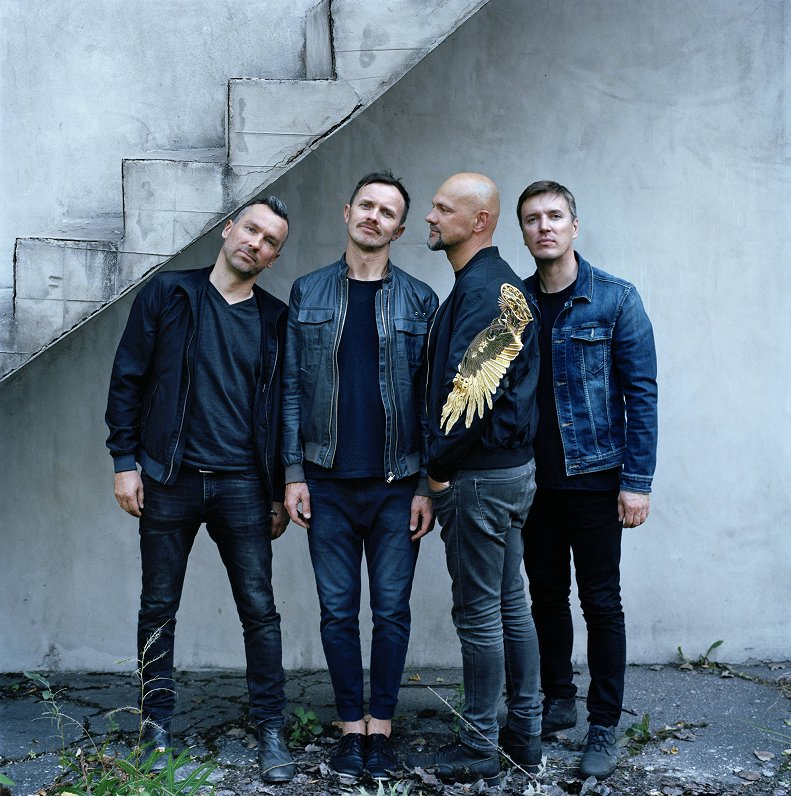
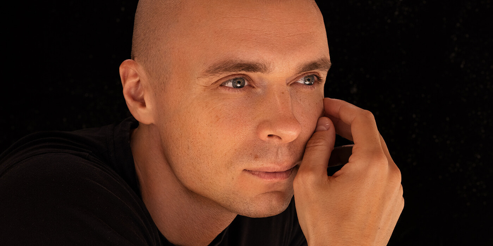
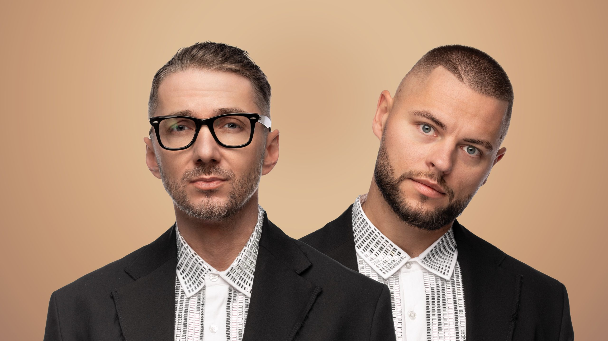
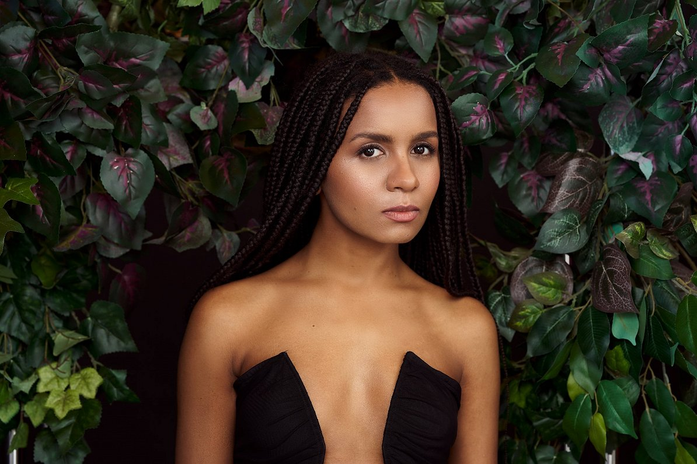
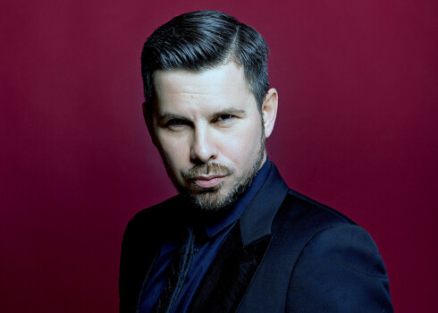
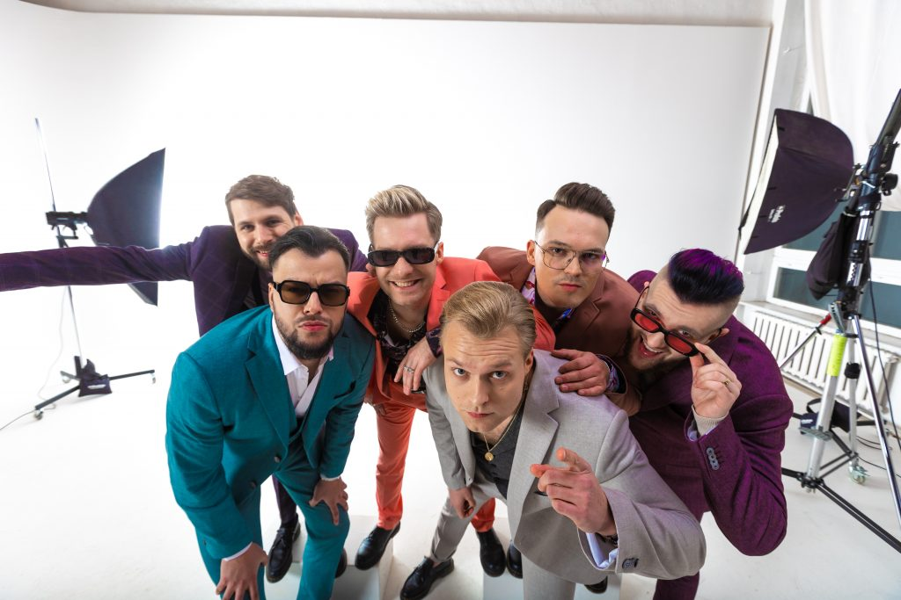

Šī mājaslapa ir par Latvijas pop mūziķiem, viņu mūziku un ietekmi.
Iepazīsti populārākos Latvijas māksliniekus un viņu mūziku

Prāta Vētra ir viena no visu laiku veiksmīgākajām Latvijas grupām, kas dibināta 1989. gadā. Grupa kļuva starptautiski pazīstama pēc uzstāšanās Eirovīzijā 2000. gadā ar dziesmu "My Star". Viņu mūzika apvieno pop, rock un alternatīvo skanējumu, un viņi regulāri koncertē arī ārpus Latvijas.

Dons (Artūrs Šingirejs) ir viens no populārākajiem latviešu solo izpildītājiem. Viņa dziesmas bieži kļūst par radio hitiem, un viņš ir pazīstams ar spēcīgu balsi un emocionāliem priekšnesumiem. Dons ir vairākkārt ieguvis Latvijas mūzikas balvas.

Musiqq ir popmūzikas duets, kas pazīstams ar modernu skanējumu un melodiskām dziesmām. Duets ieguva popularitāti ar dziesmu "Abrakadabra" un pārstāvēja Latviju Eirovīzijā. Viņu mūzika bieži dominē Latvijas topu virsotnēs.

Aminata Savadogo ir dziedātāja un dziesmu autore ar unikālu balsi un stilu. Viņa pārstāvēja Latviju Eirovīzijā 2015. gadā ar dziesmu "Love Injected" un ieguva augstu vietu. Aminata raksta dziesmas arī citiem māksliniekiem un ir viena no ietekmīgākajām pop mūziķēm Latvijā.

Intars Busulis ir daudzpusīgs dziedātājs un trombonists, kurš darbojas gan pop, gan džeza žanrā. Viņš ir uzvarējis vairākos mūzikas konkursos un pārstāvējis Latviju starptautiski. Busulis ir pazīstams ar enerģiskiem koncertiem un spēcīgu skatuves harizmu.
Triana Park ir grupa ar spilgtu vizuālo tēlu un elektroniskās popmūzikas skanējumu. Viņi pārstāvēja Latviju Eirovīzijā 2017. gadā. Grupas dziedātāja Agnese Rakovska ir pazīstama ar savu unikālo stilu un enerģiju.

Citi Zēni ir mūsdienīga pop/hip-hop grupa, kas kļuva populāra ar humoristiskiem un enerģiskiem priekšnesumiem. Viņi pārstāvēja Latviju Eirovīzijā 2022. gadā ar dziesmu "Eat Your Salad", kas guva plašu starptautisku uzmanību.